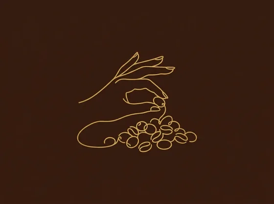
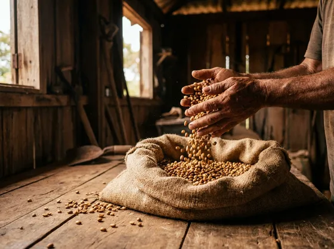
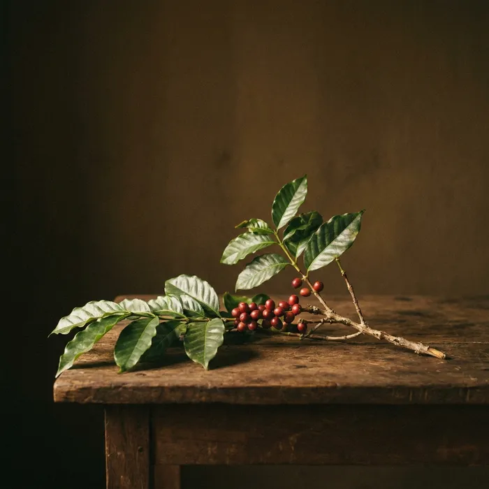
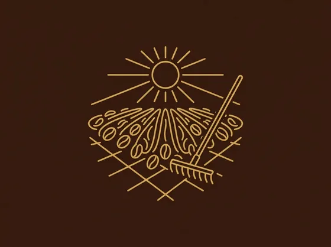
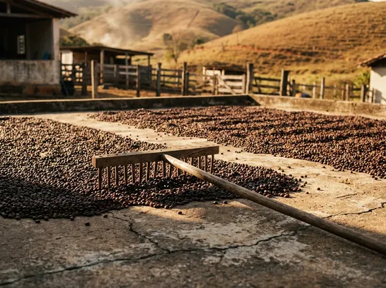
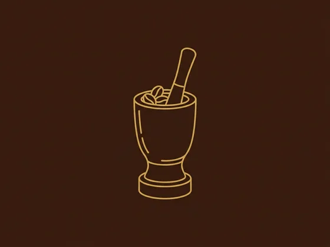
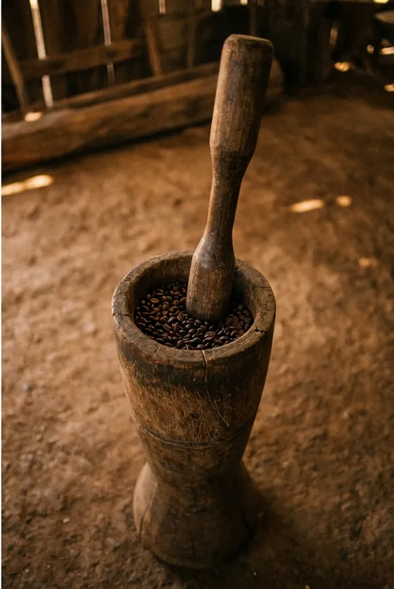
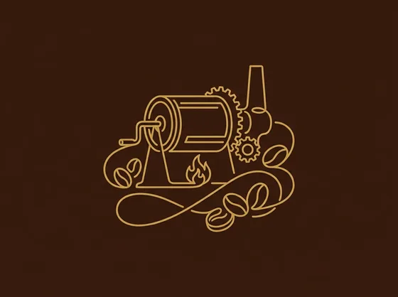
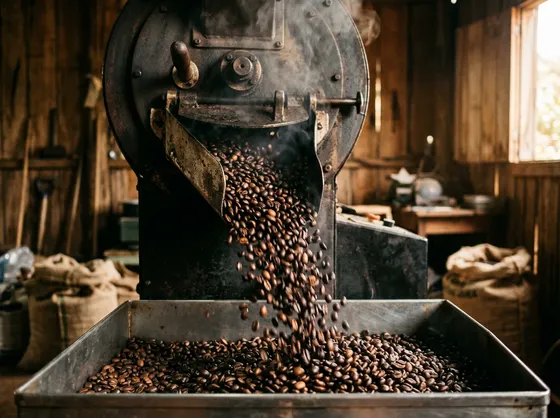
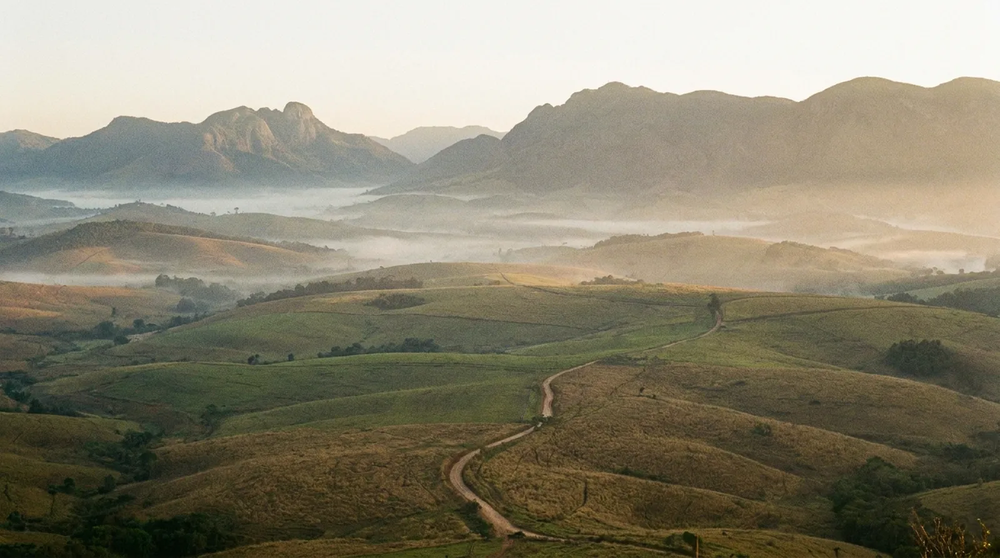

ProvisóriaA escolha
O grão é comprado de produtor, já maduro, e escolhido um a um. É aqui que o café é decidido.
Brejões, Bahia
Café 100% arábica, puro, escolhido ainda maduro e beneficiado de forma artesanal, do terreiro à torra.
Cada ponto tem uma necessidade diferente, e a gente ajusta o fornecimento ao que o seu vende.

Se você já ficou sem café numa sexta-feira, já recebeu um lote com torra velha, ou já teve que trocar de marca porque o sabor mudou do nada, é exatamente disso que a gente cuida.
O que acontece antes do pacote
A gente não tem lavoura. O que a nossa família faz há anos é escolher o grão certo e cuidar de cada etapa depois dele colhido, uma de cada vez.


ProvisóriaO grão é comprado de produtor, já maduro, e escolhido um a um. É aqui que o café é decidido.


ProvisóriaSecagem ao sol, no tempo que for preciso, até o grão chegar no ponto certo de umidade.


ProvisóriaNo pilão, do jeito tradicional, para soltar a casca seca sem maltratar o grão.


ProvisóriaTorra artesanal, em pequena quantidade, acompanhada de perto. Depois vem a moagem.
Os produtos, os tamanhos de pacote e as opções em grão ou moído ainda precisam ser confirmados com o cliente.
Moagem a confirmar
pesoMoagem a confirmar
pesoMoagem a confirmar
pesoNão precisa saber ainda quanto quer, nem ter feito conta nenhuma. Só diga que tipo de ponto você tem.
Você diz quanto costuma vender e a gente ajusta o pedido e a data de entrega junto com você.
Quando estiver acabando, é só chamar de novo. A ideia é você nunca ficar sem.
O Café Grão da Serra é tocado pelo Nelson, de Serrana, distrito de Brejões, na Bahia. É ele quem responde o WhatsApp, separa os pedidos e entrega.
O beneficiamento é feito pelo pai dele, que escolhe o grão e cuida da secagem, da pilagem e da torra. Esta parte só entra no ar depois de o Nelson autorizar falar do pai no site.

Imagem provisóriaVendemos. Atendemos padaria, mercadinho, cafeteria, mercearia, escritório e consultório, além de quem quer comprar para tomar em casa.
A confirmar com o cliente.
Atendemos Brejões e Salvador. As demais cidades da região ainda precisam ser confirmadas.
A confirmar com o cliente.
A confirmar com o cliente.
A confirmar com o cliente.
A confirmar com o cliente. O Café Grão da Serra tem CNPJ ativo, registrado como MEI.
É o café que passa pelo pilão depois de seco, para soltar a casca. É o jeito tradicional de beneficiar, feito aos poucos e sem pressa, em vez de tudo de uma vez na máquina.
Fale com a gente
Sem atendente e sem robô. A mensagem chega direto em quem prepara e entrega o café.